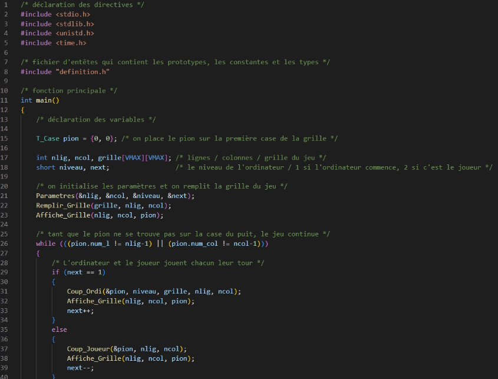

Le but de cette SAE était de créer un programme en langage C. Le jeu de Nim se joue seul contre un ordinateur et prend place dans une grille.
Le joueur et l'ordinateur déplacent chacun leur tour un pion, étant initialement sur la première case de la grille. Le but du jeu est de placer le pion sur le puits, étant situé dans la dernière case de la grille. Il existe une stratégie pour gagner à tous les coups en fonction de qui commence à jouer. L'ordinateur jouera des coups parfaits par rapport à son niveau attribué en début de partie.
Ressenti d'un étudiant
Cette deuxième SAE m'a permis de renforcer mon niveau en C et en algorithmique. Étant le deuxième projet en C, j'ai pu combler mes lacunes et changer mes mauvaises habitudes.
Compétences acquises:
Comparer des algorithmes pour des problèmes classiques
En développement, on a pu voir les notions d'algorithme de tri, de recherche et autre.C'est un concept assez simple à comprendre mais les algorithmes sont très puissants et beaucoup utilisés de nos jours.
Démonstration vidéo du jeux.